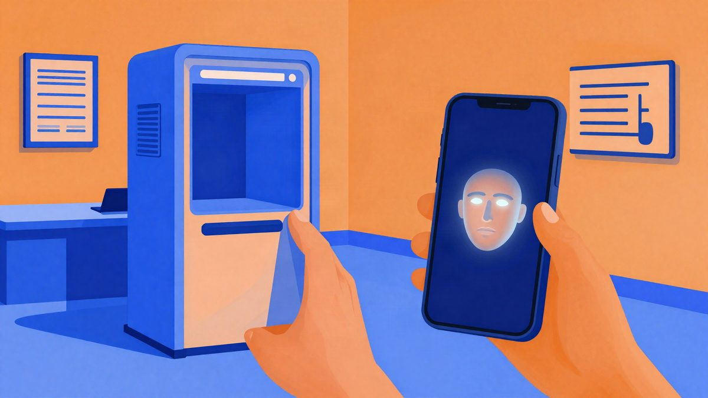

Kineski sud: majka može naslijediti 87 igraćih računa preminulog sina
Okružni sud Shijingshan u Pekingu presudio je da se pravo korištenja igračkog računa može naslijediti. Majka preminulog igrača može preuzeti 87 računa svojega sina, a tvrtka joj mora omogućiti promjenu podataka o identitetu. Nije poznato o kojoj je tvrtki riječ ni hoće li se žaliti na presudu.
Okružni sud Shijingshan u Pekingu presudio je da se računi za online igre mogu nasljeđivati. Majka preminulog igrača može preuzeti 87 računa koje je njezin sin registrirao kod jedne igraće tvrtke, a ta je tvrtka dužna surađivati u promjeni podataka o identitetu na njima.
Sin gospođe Chen, kojeg izvor navodi kao Xiaogua, umro je u svibnju 2025. od bolesti u dobi od 36 godina. Prema navodima iz postupka, više od deset godina ulagao je na računima vrijeme, trud i novac, pa je skupio račune visoke razine, virtualnu opremu i predmete. Dok je uređivala njegovu ostavštinu, majka je shvatila da bi računi mogli imati vrijednost. Obratila se tvrtki i zatražila preuzimanje, ali je odbijena.
Argumenti tvrtke i odluka suda
Tvrtka se pozvala na korisnički ugovor, prema kojem vlasništvo nad računom i virtualnim predmetima ima platforma, a korisnik samo pravo korištenja. Tvrdila je i da je račun osobne naravi pa ne može biti dio ostavštine.
Sud taj argument nije prihvatio. Prema njegovoj ocjeni, računi su virtualna imovina na internetu, a pravo korištenja koje igrač stječe korisničkim ugovorom ima imovinsku vrijednost i može se naslijediti. Identifikacija stvarnim imenom služi uglavnom za pristup uslugama platforme i upravljanje identitetom, što ne znači da račun smije koristiti isključivo osoba koja ga je registrirala. Zato je tvrtka dužna nasljedniku omogućiti promjenu podataka o identitetu.
Šira rasprava o digitalnoj ostavštini
Presuda je privukla pozornost javnosti na digitalnu ostavštinu. Društveni računi, igraći računi, računi za online plaćanje i digitalne kolekcionarske stvari danas su dio života mnogih ljudi. Neki čuvaju osobne uspomene, a neki i virtualnu opremu, kreativne sadržaje i drugu ekonomsku vrijednost.
Istraživanje koje navodi izvor pokazalo je da pojedine društvene i igraće platforme u korisničkim ugovorima i dalje imaju odredbe koje izričito zabranjuju prijenos računa darovanjem, nasljeđivanjem ili prodajom. Neke čak propisuju da pravo korištenja pripada isključivo prvotnom registrantu.
Odvjetnici ističu da je pravo korištenja računa prije svega imovinski interes. Osobna veza koju stvara identifikacija stvarnim imenom služi pristupu uslugama, a pravo ne čini neprenosivim i vezanim isključivo uz osobu. Zakonsko pravo nasljeđivanja, kažu, ne može se isključiti korisničkim ugovorom, niti ga se korisnik odriče klikom na „slažem se” pri registraciji.
Izvor: MyDrivers (快科技)
Povezani članci
 Žena iz Pennsylvanije optužena je zbog CashApp računa otvorenog na njezino ime21. listopada 2026.
Žena iz Pennsylvanije optužena je zbog CashApp računa otvorenog na njezino ime21. listopada 2026. Kineski dostavni robot je vozio u suprotnom smjeru zbog radova na cesti i zaustavio autobus i više automobila4. studenoga 2026.
Kineski dostavni robot je vozio u suprotnom smjeru zbog radova na cesti i zaustavio autobus i više automobila4. studenoga 2026.
Kineski sud: AI video može proći provjeru lica na platformama26. listopada 2026.